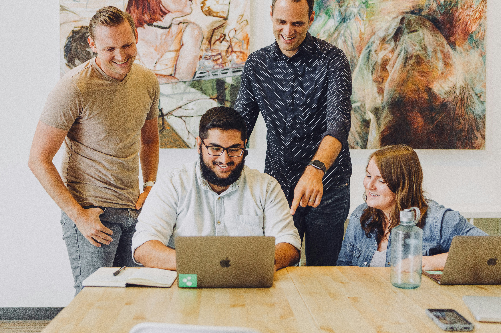
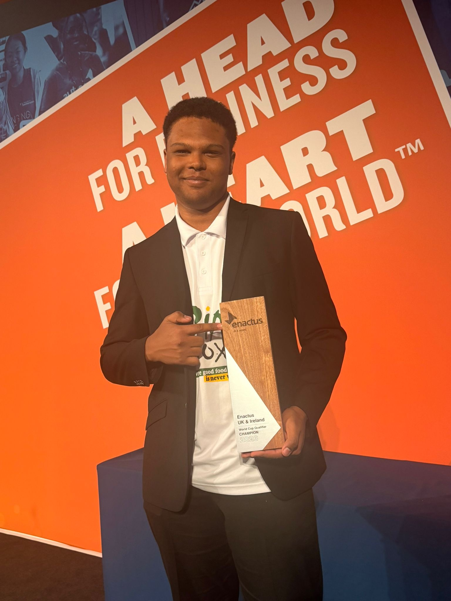
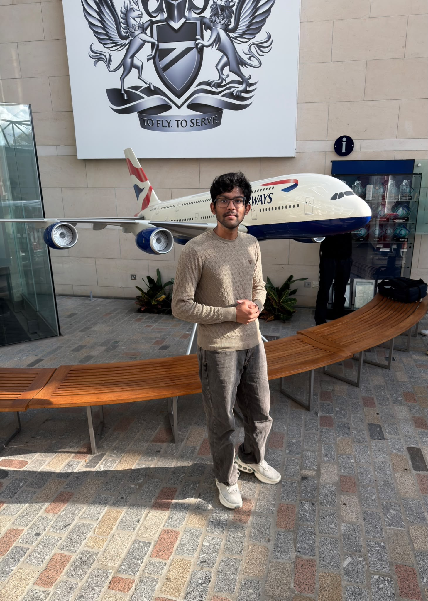
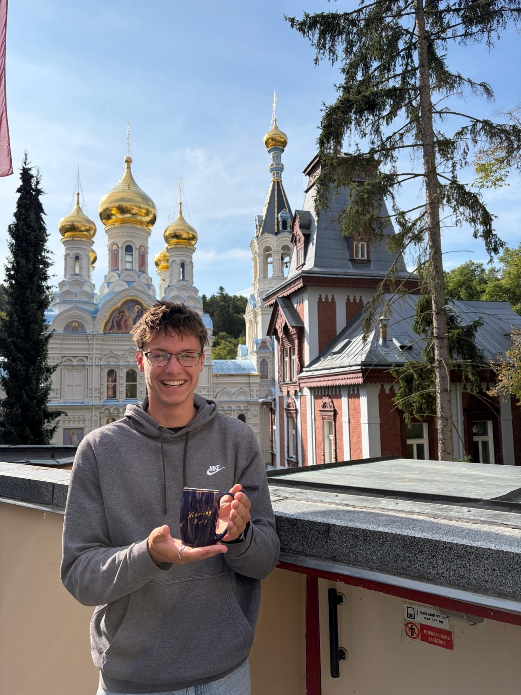
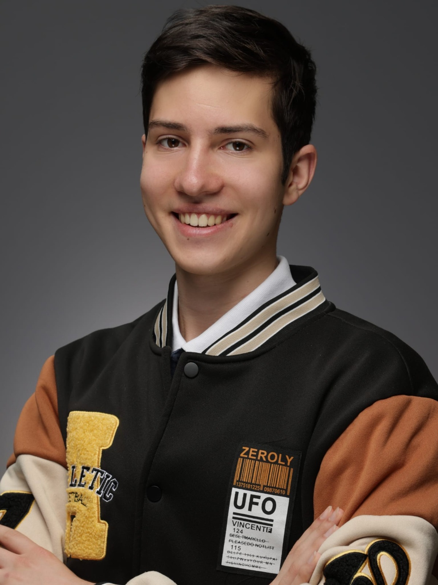
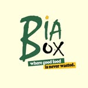

Who We Are
We are a community of student entrepreneurs creating social impact through business. Our mission is to empower the next generation of leaders to create sustainable value for communities.



We are a community of student entrepreneurs creating social impact through business. Our mission is to empower the next generation of leaders to create sustainable value for communities.


🪑 Chairperson
I'm Samuel Oni, a 3rd-year Computing student and current Chairperson of Enactus TU Dublin.
I
joined Enactus in my second year of Uni and was part of the presentation team that won the
right to represent the UK and Ireland internationally.
My hobbies are reading,
writing
and
playing games/sports.
A fun fact about me is that I cannot remember someone's name to
save
my life.

📋 Secretary
I’m Jai Depuru, a third year Computing student and the Secretary of Enactus TU Dublin.
I joined Enactus this year, and I’m genuinely excited to learn, grow, and contribute
alongside
the team. I love helping our group represent the UK and Ireland on an international
stage.
My hobbies include reading, learning new languages, and playing games and sports.
A fun
fact
about me is that I’m actively involved in social impact work within the tech industry.

I'm Frantisek Kadlec, a mechatronic engineering student at TU Dublin.
I'm a granny's
favourite, energetic and bold, and my hobbies are dancing and running.
I love the
Enactus society because it lets me
travel around with awesome people.
A fun fact
about me:
I can split an apple with my bare hands.

I’m Bohdan Yeriemienko, a final-year Computer Science student at TU Dublin and the co-founder
of BiaBox.
An active member of Enactus from my first year and a proud finalist of Enactus UK and
Ireland competition
I like Enactus because it brings together people who want
to turn ideas into real projects and create a positive impact in their communities.
3 words that describe you: Curious, ambitious, proactive.
my hobbies are chess, travelling, badminton and football.
Fun fact about me, I am very competitive at board games 😄

Why I love Enactus Society?
I love meeting amazing people, travelling, and working together to make a positive impact in
the community.
Three words that describe Myself:
Ambitious, Authentic, and Adventurousness.
My hobbies/interests:
Reading, going to the gym, running, dancing, Drawing, Helping others when I can and
self-improvement.
Fun fact!: I’m always looking for ways to improve myself, whether that’s physically,
mentally, or by
learning something new! And I have a world record on NASCAR heat 4
Get involved with Enactus TUD! Check out our latest projects and social events.

Biabox is an initiative
from
Enactus
TU Dublin that
tackles food waste by redistributing surplus food directly to households in the
community.
We
collect ingredients that would otherwise be discarded and ensure they are put to
meaningful
use,
reducing unnecessary emissions and supporting a more circular food system.